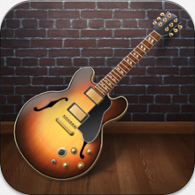
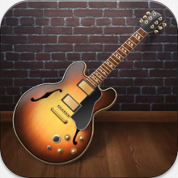
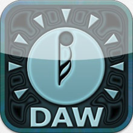
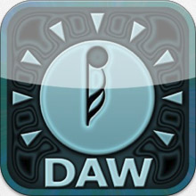
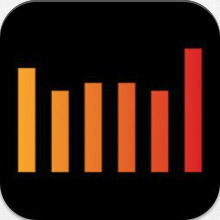
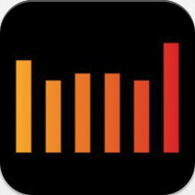
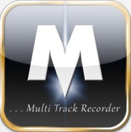
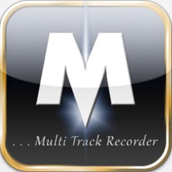
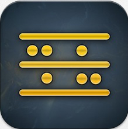
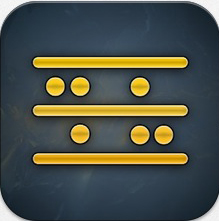

If you fancy turning your iPad into a multi-track recording studio, aside from all the other bits of hardware or other apps you might need, you need a DAW (digital audio workstation) app. There are quite a number of potential DAW apps available in the iTunes App Store that you might use. The question is, however, which of these DAW apps is right for you? While I’ve no intention of making this a comprehensive list, here’s a quick roundup of some of the contenders that would be on my personal ‘possible’ list and their key pros and cons. Hopefully, this iOS DAW roundup might help you decide which of these might best suit your own needs.
While identifying the ‘best DAW app’ is undoubtedly a subjective process, it is fair to say that some of these DAWs offer more comprehensive feature sets than others. However, each of these apps has its own particular balance of features, ease of use and price. It’s also fair to say that none of them – at present at least – is ‘perfect’. Even with the most high-profile and well featured of the current crop, it’s possible to identify some fairly obvious ‘feature gaps’. Regular updates from the leading developers are gradually making these gaps smaller but, in terms of giving you the all the core features that have been taken for granted on even the most basic of desktop computer DAWs for many years, iOS DAWs (for some perfectly understandable reasons) still have some way to go.
Of course, different musicians, with their own specific musical interests, may well have different technical requirements. It’s therefore worth stating at the outset that there isn’t a single DAW that might be recommended above all others. All the apps listed here are good in their own way and would suit particular users.
One further comment before I dig in; in this list, I’m only going to consider those apps that provide DAW-style audio recording. There are lots of very good apps that allow sequencing of synth-based music compositions (including Blip Interactive’s excellent Nanostudio or 4Pockets’ Aurora Sound Studio) but these are perhaps a topic for a different ‘roundup’ article. So, with that qualification made, let’s get to the apps themselves.
Garageband by Apple (UK£2.99)
 Even if you are new to the whole world of multi-track recording, then I suspect you will have heard of Garageband. Originally released as a ‘beginner’s’ music production tool for the Mac (although, frankly, the Mac version is capable of making some pretty sophisticated recordings), Garageband for iPad bought the core features of the Mac version to iOS. In doing so, it actually managed to add a few extra things – courtesy of the touchscreen – that even desktop users would be a little envious of.
Even if you are new to the whole world of multi-track recording, then I suspect you will have heard of Garageband. Originally released as a ‘beginner’s’ music production tool for the Mac (although, frankly, the Mac version is capable of making some pretty sophisticated recordings), Garageband for iPad bought the core features of the Mac version to iOS. In doing so, it actually managed to add a few extra things – courtesy of the touchscreen – that even desktop users would be a little envious of.
Garageband has something for almost everyone. Providing you have the right additional hardware (microphones, audio interface, etc.), it allows you to record audio tracks (vocals or acoustic instruments, for example) but also includes MIDI tracks. These MIDI tracks can be used with a range of virtual instruments that are included within the app; synths, drums, pianos, organs, guitars, etc., so you have a wide musical palette at your fingertips. What’s more, several of the included instruments are ‘smart instruments’ that make brilliant use of the touchscreen to provide very intuitive playing options.
Garageband for iPad; it might only be eight tracks but it packs a lot power considering it costs the same as a large coffee.
The app also includes guitar amp simulation (and it is actually pretty good) and a sampler instrument (perhaps not so good but quite fun to experiment with). There is also support for Audiobus so you can use Garageband with other iOS music apps. It accepts audio from most audio interfaces and, with the right MIDI connectivity, you can also hook up an external MIDI keyboard.
Garageband offers an excellent suite of virtual instruments.
Garageband for iPad includes a range of effects options – there are nice effects that can be used within the guitar amp simulator, for example – but this perhaps isn’t the app’s strongest suit. The main issue is that app doesn’t really include a virtual version of a conventional hardware mixer. You don’t therefore, get the traditional implementation of things like insert and send effects or the ability to automate your mixes in any fashion.
Perhaps the other real downside is that, currently at least, you are limited to eight tracks. You can ‘bounce’ a set of tracks down to a single track and then carry on adding additional instruments if you wish but this isn’t an ideal way to work if your music requires lots of tracks. Apple may have applied this restriction simply to ensure that the app always runs smoothly and never runs up against a CPU overload. With newer generations of iPad becoming increasingly more powerful, it would be great to think that, at some stage, this track count limit might be raised. Even 16 tracks would take the app to another level in terms of its potential and there is no technical reason why Apple couldn’t implement a ‘track freeze’ system (essentially a way of temporarily converting a synth-based track that might be using lots of resources into an audio track that uses fewer resources) as found on many other DAW apps (iOS and in the desktop music production world).
Garageband’s amp simulator is also well featured.
If you are an electronic musician with an interest in dance, electronica, dubstep, etc., perhaps you might find the virtual instruments in Garageband a little restrictive. Audiobus obviously provides a work around for this and, as Apple have introduced the inter app audio (IAA) protocol in iOS7 to allow the passing of audio between different apps, you would hope and expect that they will build support for IAA into Garageband fairly soon.
For everyone else – and particularly those new to multi-track recording – however, this is an absolute must have app. It might have a reputation as a bit of a consumer toy, but in the right hands, Garageband for iPad is capable of making some very respectable recordings. If Apple does decide to keep Garageband’s development going, more tracks, IAA support and a proper mixing environment (with insert and send effects and the ability to automate), would make this a seriously powerful platform.
Multitrack DAW by Harmonicdog (UK£6.99)
 While I think Garageband is an excellent ‘starter’ app for recording newbies, it is still possible to make a case for it being too complicated. If the thought of virtual instruments and MIDI and amp modelling and sampling makes your head spin, then you could go for something a little more straightforward. One possibility would be Multitrack DAW.
While I think Garageband is an excellent ‘starter’ app for recording newbies, it is still possible to make a case for it being too complicated. If the thought of virtual instruments and MIDI and amp modelling and sampling makes your head spin, then you could go for something a little more straightforward. One possibility would be Multitrack DAW.
This is an audio-only application and, in that sense, is comparable to the portable hardware digital multi-track recorders you can buy from the likes of Tascam and Zoom, although because of the touchscreen interface, you generally get a more flexible working/editing environment on the iPad than with the small(ish) LCD screens built into budget hardware recorders.
Multitrack DAW perhaps doesn’t have the extensive feature list of some of the other DAW listed here but that can make it a great place to start.
Multitrack DAW starts with a maximum of eight mono/stereo tracks but this can be expanded to 24 tracks via an in-app-purchase (IAP). You also get a range of audio effects such as compression, EQ, reverb and delay.
The range of effects is limited, but good enough for routine recording tasks.
The app is happy to work with most external audio interfaces (for example, via the docking connecter or USB interfaces compatible with Apple’s Camera Connection Kit (CCK)) and some USB mics (also via the CCK). Equally, it now has Audiobus support so, if you want to record the audio output of your other music apps (providing they work with Audiobus), then that is now pretty straightforward to do.
What I like about this app is the lack of fuss. It has enough features to make solid multi-track recordings but it is not so complex that a beginner would find the learning curve too much of a challenge. The on-screen editing and mixing options are fairly intuitive and, in short, Multitrack DAW gets the job done with a minimum of fuss. If you are happy to just work with audio, want a decent track count (with that IAP) and want a no-frills starting point for your recording journey, Multitrack DAW is a decent bet.
Auria and Auria LE by WaveMachine Labs (UK£34.99 and UK£17.49)
 If you want to stay with an audio-only environment, but want to go to the top of the pile, then look no further than Auria. The app is available in two versions that, track counts aside (the LE version only offers 24 tracks as opposed to 48 in the full version but there is a simple IAP to upgrade if you wish), provide identical features. And while Auria doesn’t (at the time of writing at least) support MIDI tracks, it does accept MIDI data. This can be used to provide automation of things like channel levels and effects parameters, etc. and means that certain mixing tasks can be automated.
If you want to stay with an audio-only environment, but want to go to the top of the pile, then look no further than Auria. The app is available in two versions that, track counts aside (the LE version only offers 24 tracks as opposed to 48 in the full version but there is a simple IAP to upgrade if you wish), provide identical features. And while Auria doesn’t (at the time of writing at least) support MIDI tracks, it does accept MIDI data. This can be used to provide automation of things like channel levels and effects parameters, etc. and means that certain mixing tasks can be automated.
Auria might (currently) be audio only but, in terms of multi-track audio recording, it is the most fully-featured DAW available for iOS.
On the audio side, however, Auria is the real deal. It offers features that would not disgrace a top-flight DAW on the desktop. It offers a very comprehensive selection of effects (both insert and send effects) including an excellent channel strip with a compressor, EQ and expander available on each audio channel and very respectable reverb and delay options as send effects. Remarkably, there is even a pretty effective pitch correction tool; not Autotune or Melodyne in standard (perhaps the two best pitch correction tools available to desktop musicians), but it does a decent job.
Auria’s mixer is very well featured and the app also provides an excellent range of audio effects.
Auria is also expandable in that there is a whole range of additional options available as IAPs. These include Overloud’s THM and Postive Grid’s JamUp Pro guitar amp sims that are both excellent. While the inclusion of pitch correction is remarkable enough, a video playback window is also available as an IAP; if you wanted to, you could use Auria to score to picture. Auria offers Audiobus support and, according to the Auria forums, support for IAA is in development.
[Update: the day after I posted this roundup (doh!), WaveMachine Labs released v.1.130 of Auria adding IAA support for both instrument and effects apps. See the full details here. It really does look very encouraging :-)]
Auria is not really an app for beginners but, as a fully-featured audio-track only recording environment, it is currently as good as it gets under iOS. On its initial release, it was a complete game changer for recording under iOS and this is a lot of DAW for a very modest price. If WaveMachine Labs do ever add a full MIDI track support to Auria then it would be very difficult to ignore.
Cubasis by Steinberg (UK£34.99)

 Rather like Garageband for iPad can be seen as a baby brother to Apple’s desktop version of Garageband and their flagship Logic Pro music production software, so Cubasis can be seen as the iPad-shapped sibling of Steinberg’s desktop Cubase range.
Rather like Garageband for iPad can be seen as a baby brother to Apple’s desktop version of Garageband and their flagship Logic Pro music production software, so Cubasis can be seen as the iPad-shapped sibling of Steinberg’s desktop Cubase range.
Unlike Auria, which is currently an ‘audio-only’ recording environment, Cubasis supports both audio and MIDI tracks. This means that you can sequence MIDI data within Cubasis and use that with other iOS MIDI apps such as synths like Thor or Nave. And while the iPad is perhaps not the best environment to have multiple virtual instruments all running at the same time (you would quickly run out of CPU resources), having recorded the MIDI, you can then always capture the performance from your synths as audio tracks, only returning to the MIDI parts if you eventually decide you need to edit a performance in some way.
Cubasis offers a very slick user interface based upon their flagship desktop DAW Cubase.
Cubasis is Audiobus compatible and, via a free-to-download add-on to Cubase, projects from Cubasis can easily be transferred into the desktop version. It is, therefore, easy to use Cubasis as a mobile musical scratch-pad for your song ideas if you then want to transfer them to Cubase for ‘finishing’.
Cubasis provides a decent MIDI editing environment amongst its other features.
That said, Cubasis is not just for existing Cubase users as the app is well featured and allows you to get some serious recording work done. There are a range of effects included covering compression, EQ, reverb, delay, chorus, phaser, overdrive, limiter and a basic amp sim. Audio track numbers are only limited by the capability of your iPad’s CPU to keep up.
On the MIDI side, the app includes two virtual instruments. Micro Sonic is a streamlined version of the desktop Halion Sonic and provides a range of virtual instrument sounds covering pianos, guitars, orchestral instruments, synths, etc. The second is Micrologue, a streamlined version of the desktop Retrologue, and that provides a proper synth engine. While this doesn’t perhaps compete with dedicated iOS synth apps such as Thor or Nave, it is capable of a wide range of sounds, is easy to use, and doesn’t blow your iPad’s CPU out the water.
As well as a virtual keyboard with chord pads, Cubasis offers a drum pad performance option.
The Cubasis user interface borrows a lot from the Cubase desktop platform. While this means it is instantly familiar to existing Cubase users, it also means it is slick as the desktop software is a mature and well-designed application.
On the downside, at present at least (and unlike Auria), Cubasis does not offer any form of automation system. In terms of the mix stage of a complex project, this is a limitation. Thankfully, Steinberg have announced that two features are currently ‘in development’ and will be introduced in the next two updates; IAA support and automation. These will simply help round out what is already a very capable recording environment.
Meteor by 4Pockets (UK£13.99)
 As with Cubasis, Meteor, by developer 4Pockets, offers both an audio and MIDI recording environment. By default, you get a maximum of 16 tracks, but you can increase that up to 24 with an IAP (UK£4.99) if required. For anyone who has used any mainstream DAW on a desktop computer system, the basic layout of Meteor will seem reasonably familiar; a track-based system where you can mix and match audio and MIDI-based tracks as required as well as a virtual mixer. While the broad layout is fairly conventional, there is a slightly quirky (individual?) feel to the graphical design.
As with Cubasis, Meteor, by developer 4Pockets, offers both an audio and MIDI recording environment. By default, you get a maximum of 16 tracks, but you can increase that up to 24 with an IAP (UK£4.99) if required. For anyone who has used any mainstream DAW on a desktop computer system, the basic layout of Meteor will seem reasonably familiar; a track-based system where you can mix and match audio and MIDI-based tracks as required as well as a virtual mixer. While the broad layout is fairly conventional, there is a slightly quirky (individual?) feel to the graphical design.
Meteor offers a fairly standard approach to sequencing the various elements within your project.
As well as the main screens for arranging and mixing, the app includes options for basic audio and MIDI editing (although the latter has to be added as an IAP). These are perhaps best described as functional rather than fully-featured but they get the job done. In truth, this kind of editing is one area where the desktop mouse shows its strength compared to the touchscreen; often your fingers just get in the way of seeing what you are editing. This is an issue for all iOS DAWs though, not just Meteor.
Meteor’s mixer is well featured (if rather blue).
In terms of effects, you get both insert and send effects as well as ‘master’ effects (essentially insert effects but placed on the main stereo output channel). The effects themselves are solid enough and cover the usual bread and butter processing options. They also offer plenty of controls to tweak although, to my ears at least, in terms of audio quality, I think those offered by something like Auria perhaps have an edge.
There is a range of additional options that can be added as IAPs and this includes other effects but also the aforementioned MIDI Editor. This can be purchased individually or with a virtual instrument bundle (UK£10.49 for the bundle). If you want to get the best our of Meteor’s MIDI functionality, this bundle would be a pretty much an essential purchase. The instruments include a sampler, virtual synth and a drum pad instrument. These are respectable enough and, as with the virtual instruments build in to Cubasis, they bring the benefit of having your MIDI instruments all working ‘in house’ within your DAW host. However, if you use apps such as Thor, Nave or one of the other top-notch iOS synths, I suspect you might prefer to stick with these as your sound source. Thankfully, Meteor provides Audiobus support so it is perfectly possible to integrate it with other iOS music making apps.
Once you dig in to Meteor it is a surprisingly deep app. It does tend to do some things in very much its own way and once you have added a few of those IAPs, its price gets closer to that of Cubasis or Auria, but it is a capable audio+MIDI DAW that can easily be used to make respectable multi-track recordings.
BeatMaker 2 by Intua (UK£13.99)
 BeatMaker has been around the iTunes App Store for a long time and v.2 was released back in February 2011. In iOS terms, therefore, this is quite a mature piece of software. Oh, and don’t let the name fool you; this is more than just a ‘beat maker’; like Cubasis and Meteor, BeatMaker 2 is a full MIDI+audio music production environment.
BeatMaker has been around the iTunes App Store for a long time and v.2 was released back in February 2011. In iOS terms, therefore, this is quite a mature piece of software. Oh, and don’t let the name fool you; this is more than just a ‘beat maker’; like Cubasis and Meteor, BeatMaker 2 is a full MIDI+audio music production environment.
As with the other apps described here, in the main, BeatMaker 2 doesn’t try to reinvent too many DAW wheels. The usual track-based timeline is therefore present and correct and there is a fairly conventional mixer environment that includes some automation features. And while you don’t get a full-on synth engine (as found in Cubasis and in Meteor’s IAPs), you do get a good range of sample-based virtual instruments (with a few synth-like parameters you can edit) and a very nice Drum Machine instrument. You can also create your own sample-based instruments using the rather impressive sample mapping tools. BeatMaker 2 includes MIDI editing from the of in a fairly conventional piano roll editor. This does the job well enough but, as commented above, MIDI editing is still not the greatest of experiences via a touchscreen under iOS.
BeatMaker 2’s sequencing environment follows a fairly standard format.
The app includes a range of effects and these can be used as insert effects or send effects. These include all the usual suspects; various modulation options, reverb, delay, EQ and a filter, for example and each has plenty of controls to allow tweakers to do their thing. The sound quality is respectable enough but, as with Meteor, perhaps not quite in the same class as those effects available in something like Auria or some of the 3rd party iOS effects apps that are available.
The Chop Shop allows you to get involved with some beat slicing and tempo/pitch stretching.
One further feature is the Chop Shop. As found in many desktop DAWs, this allows you to slice things like drum loops into individual drum hits and do some pitch/time stretching. You can also use these sliced samples to build your own drum kit within the Drum Machine. This works very nicely and is pretty impressive in the context of iOS DAWs.
The MIDI spec of the BeatMaker 2 allows it to work with other iOS music apps quite happily and as it also provides Audiobus support, it is easy to use it as the cornerstone of your overall music production workflow. At the time of writing, Intua have also announced that v.2.5 is very close to being released and will include IAA hosting support. This will be an excellent addition and it will be interesting to see how far Intua have been able to take this technology, particularly with respect to hosting audio effects rather than just virtual instruments. Watch this space….
Although the basic features of the app will be familiar to any experienced DAW user, in use, BeatMaker 2 does do some things in very much its own way but, overall, it is a well-specified and very capable audio+MIDI sequencer. As with the other apps in this list, in the right hands, BeatMaker 2 will allow you to make some sophisticated music recordings.
Which DAW to open?
As I commented at the start of this article, each of these DAWs comes with a different set of features and a different price. Which one is right for you (rather than me or anyone else) will obviously depend upon how those specifications match your own needs. So can I offer some final general thoughts that might help you decide which DAW to choose?
If I was just beginning to explore the world of multi-track recording (and iOS just happened to be the platform I was going to do that on), then I’d start with Garageband for iPad. It’s cheap, easy to learn, fun to use and yet capable of making some great recordings. If you are serious about recording as a pursuit, then I suspect you might soon graduate to something else but, as a starting point, Garageband offers an ideal combination of features.
For those looking for something more sophisticated and fully featured, then the choice is less straightforward. If you are happy to work in an audio-only recording environment (and lots of musicians are quite happy to do so), then Auria is the most powerful platform iOS currently has. There is a learning curve involved but, as WaveMachine Labs have done their very best to recreate an audio-only hardware studio in software, anything you learn here will translate well to other multi-track recording environments should you eventually want to go further.
And my personal choice? Well, I use both audio and MIDI in my own recording projects and, on my desktop music production system, I’ve been a regular Cubase user for many years. As an all around iOS recording environment, therefore, Cubasis gets my vote…. But that’s because it is the best fit for my particular needs.
Your mileage may, of course, vary…. There are full reviews of most of these DAW apps elsewhere on the Music App Blog website so use the Search or Archive options to find them if you want more details. Oh, and have fun deciding :-)


{kind=link}
{kind=link}
{kind=link}
{kind=link}
{kind=link}
{kind=link}
{kind=link}
{kind=link}
{kind=link}
{kind=link}
{kind=link}
{kind=link}
{kind=link}
{kind=link}
{kind=link}
{kind=link}
{kind=link}
{kind=link}
{kind=link}
{kind=link}
Great! this post is very helpful
Hi Glen… thanks :-) There are one or two other DAW apps out there that I could add to the the list at some stage when I get a chance.
BTW, just about to update the section on Auria given the release today of IAA support….
Best wishes,
John
Great review. I use different apps for recording for different needs. From GB to Meteor, each has a great tool box. I’m holding out on Auria. I’ve got a question. Can you provide direction about learning MIDI. I’m old school and want to be sure I’m up to date on using MIDI within ios environment. Back in the day there were a lot of cables and a lot of external devices. But these days so much is internal. I’ve recently purchased the iConnectivity2+ because I want to use my iOS device with an external keyboard while being able to keep my ios device charged courtesy the iConnectiviy. So I’m curious about updating my info on MIDI. I suspect there are a few changes.
thanks,
Martin
No Nanostudio? I know that it’s audio capabilities are pretty limited, but I think it would be worth mentioning for it’s sophisticated MIDI capabilities, quality of it’s synthesizer and flexibility of its drum pad interface.
Hey,
Is this new? I don’t remember seeing it last year.
It looks sweet. http://us.focusrite.com/usb-audio-interfaces/scarlett-18i20
Very nice post. A few more variables to consider are 1) the instruments you are playing (and to a lesser extent the style), 2) the device you’re using to record and 3) where you’re going next.
If you’re looking for drums, piano and organ to compliment guitar and vocal tracks, Garageband provides everything you need and is convenient, easy to use and (now) free. It supports 16 to 32 tracks now too. The big winner for Garageband though is the Smart Drummer. This makes creating drum backing tracks easy, fast and fun. You can then replace or augment them with additional tracks to complete the drums.
Also If you’re going to be recording on iPhone and iPad, again Garageband is a great choice Multitrack is also good, but doesn’t have MIDI or the convenient instruments.
If you’re like me, you have a quality laptop and something like Logic Pro X that’s also useful for mobile recording. Again Garageband is a good choice here because it supports iCloud making it extremely easy to share content. Garageband on Mavericks is also free now, and has been rebuilt as a subset of Logic Pro X, which itself have come down in price significantly.
I think Yamaha’s “Mobile Music Sequencer” is outstanding for musical composition and ideas sketching in realtime on the iPhone or iPad. It’s very close to Ableton Live– and actually better in many respects. This is the hidden jewel in the rough. Can’t believe I waiting this long to try it. I just never could find much info on it! Yes it looks quirky, but it’s features, once understood, open up words of ease and composing joy. For example input a rhythmic vamp just once and then porgram that automatically into a chord progression that you can keep tailoring. Mix and match phrases from different sections and create new ones from what works. And more!
Hi Gary… it’s an app I’ve had lying around for ages but never really dug into it… Guess I’d better try and rectify that :-) best wishes, John
Despite its goofy graphical interface n-tracks is worthy of mention, i do not know the specifics of cubasis or beatmaker, please let my know? but as far as i have experienced, it is the only DAW that allows simultaneous capture of at least 2 tracks of audio and midi, this is not the case with Meteor regrettably, aside from that its low cost and unique recording abilities makes it suitable for my needs of recording live. honestly unless i was on a desert island with just an ipad, i would use a desktop or laptop to really get down to business, so Auria is a bit over the top for contemporary Ipad capabilities, , but lacking midi makes it pretty redundant for me , i have read about some issues with Cubasis, for that kind of money i would expect all those features and full functionality , love to know a bit about its capoabilities as far as multitrack audio and midi
Auria Pro. MIDI, baby.
There is a great DAW that you didn’t mention called Multitrackstudio(MTS) for iPad, by Giel Bremmers. It is a solid app that supports AU, MIDI, IAA etc. It has great sounds and it’s own effects. It supports recording multiple simultaneous tracks and all the professional stuff. The interface is well done and easy to use but not fancy and flashy. Who needs fancy. I need good apps that don’t crash all the time. This one is a winner. It also has a separate remote control app. I am surprised you left it out. I think it is an important one. I think Multitrack DAW that you did review is a great oldie but the combination of MTS AND MTS Remote is way better in every way.
There is also FL Studio which is interesting for FL Studio users on laptops and desktop computers.